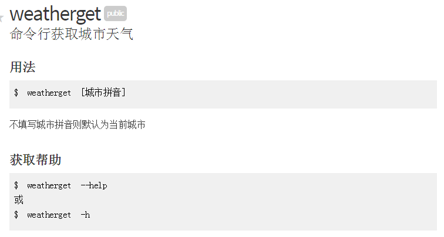
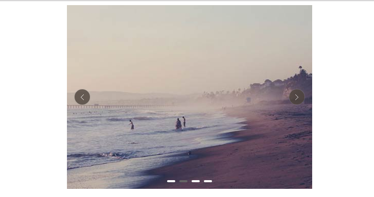
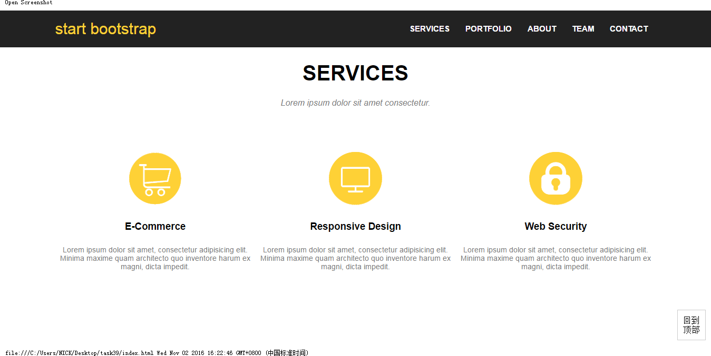

-
- Basic info. 基本信息
- 个人信息: 李智远 / 男 / 22岁
- 教育经历: 本科 / 浙江理工大学
- Blog: https://nicklzy.github.io/
- GitHub: https://github.com/Nicklzy
-
- Skill. 技能清单
-
HTML / CSS
熟悉W3C规范、开发调试、浏览器兼容、代码可读性、常见布局、HTML5、CSS3、盒模型、浮动定位、BFC、CSS3动画、flex、栅格、响应式
能够使用bootstrap, less, postcss等CSS框架
-
JavaScript
熟悉原生Javascript、事件模型、DOM 操作、math对象、计时器、ajax、jsonp、跨域、闭包、原型链、面向对象、封装、jQuery、jQuery 插件、RequireJS、UI 组件
熟悉模块化、面向对象的方式编程
-
框架、工具
熟悉requirejs、npm,能够使用Gulp等前端自动化工具
熟悉Sublime、WebStorm、Atom、git
-
后端
熟悉webserver、http、能使用php做简单接口调试
能使用nodejs制作简单工具
-
- Experience. 项目经验
个人项目
-
FM Player 源代码 Demo
项目描述：网页版FM播放器，音乐数据基于百度音乐FM，风格简介大方
使用技术：HTML5、CSS3、自定义字体、响应式、ajax、正则、audio元素的相关属性操作、jQuery常见操作、动画、计时器、math对象、DOM对象操作
-
Weatherget 源代码 npm
项目描述：一个基于nodejs制作的命令行查询国内城市天气工具，调用公共的天气API接口。参数为城市拼音，缺省值为当前城市
使用技术： nodejs、npm发布、github、加载、封装模块、http请求、JSON数据解析
 -
jQuery轮播插件 源代码 Demo Demo
项目描述：基于jQuery的轮播插件，包括渐变轮播与滚动轮播。可以自适应宽度、自适应图片数量，有方便的切换按钮
使用技术：jQuery、jQuery动画
 -
Web主页 源代码 Demo
项目描述：一个Web小站。包含全屏轮播、jsonp、瀑布流、懒加载、回到顶部、时间轴布局、RequireJS、并使用r.js打包
 -
更多开源项目 源代码

李智远的简历
"Write the Code. Change the World."
-
- Contact. 联系方式
- 邮箱: tydx11@hotmail.com
- 手机：15067147186
- QQ: 236506083
-
- Application. 应聘岗位
- 前端工程师